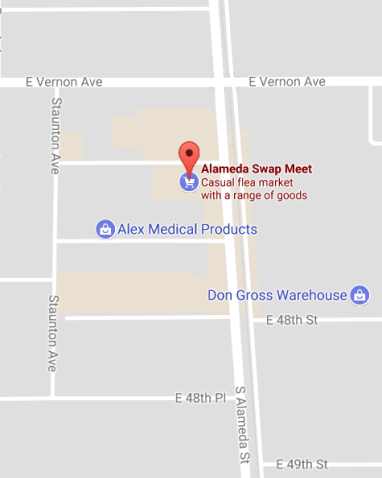

<!--
  Generated template for the MapsPage page.

  See http://ionicframework.com/docs/components/#navigation for more info on
  Ionic pages and navigation.
-->
<ion-header>

  <ion-navbar>
    <ion-title>Maps</ion-title>
  </ion-navbar>

</ion-header>


<ion-content padding>


<!-- 
<button ion-button block (click) = "goBackHome()" class="found">Found Stand</button> -->

</ion-content>
